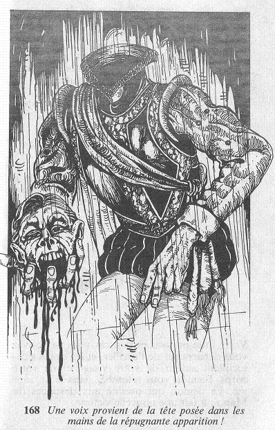

Soudain, une voix étouffée vous appelle par votre nom ! Vous bondissez contre le mur, et vous voyez avec terreur une forme se matérialiser au centre de la pièce. Une silhouette à l'aspect humain a traversé le mur ; ou plutôt, une silhouette à l'aspect vaguement humain... car elle est décapitée. Comme elle se matérialise devant vous, sa voix devient plus audible ; et cette voix provient d'une tête posée sur les mains de la répugnante apparition !  Le spectacle est d'autant plus affreux que le tapis commence à rougir du sang qui s'écoule lentement de la tête tranchée. Vous ajoutez 2 points à votre total de PEUR. Allez-vous rester dans cette pièce pour savoir ce que vous veut ce fantôme, ou préférez-vous prendre vos jambes à votre cou, et fuir ce lieu sans demander votre reste ?